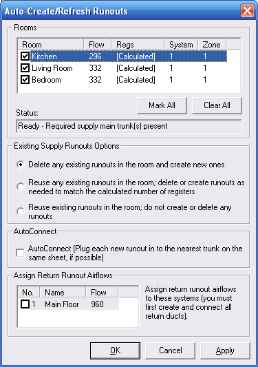

Auto Create/Refresh Runouts (Manual D Ductsize) |
  
|
Auto Create/Refresh Runouts (Manual D Ductsize) |
|
To open this dialog: Right click a duct, then click Auto Create/Refresh Runouts from the popup menu.
This dialog lets you create runouts for each of the rooms that you have drawn with the Rhvac MJ8 Drawing Objects catalog.

Rooms List: Shows each Rhvac room that you have drawn, along with the supply airflow, system and zone numbers. Check the box beside each room for which you want to create runouts.
Mark All, Clear All: Checks or unchecks the box for each room in the list.
Status: Shows a message indicating whether or not a supply trunk exists for each Rhvac system in the project.
Existing Supply Runouts Options: Determines whether or not existing runouts in the selected rooms will be deleted or reused.
AutoConnect: When checked, makes it so the program will attempt to connect each new runout into the nearest trunk on the same sheet. It is usually best to leave this checkbox unchecked so that you can have control over where and how your ducts are connected together.
Assign Return Runout Airflows: When the box for a system is checked, assigns the supply airflow to the return runouts that are connected to that system's Return Main Trunk object.
OK: Applies the changes you have made on this dialog and closes it.
Cancel: Closes this dialog without making any further changes.
Apply: Applies the changes you have made on this dialog without closing it.